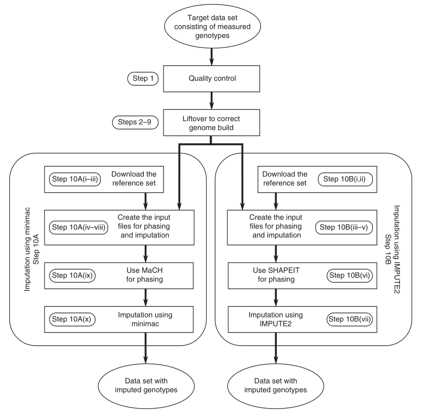

SNP Imputation
2020-09-18
HOME
NOTES RELATED
- van Leeuwen EM, Kanterakis A, Deelen P, et al. Population-specific genotype imputations using minimac or IMPUTE2. Nat Protoc. 2015;10(9):1285-1296. doi:10.1038/nprot.2015.077
Workflow of the imputation protocol

Bash code for step 10.B
<<TREE
├── source
│ ├── clean-GWA-data.HG19.for-impute.plink.ped
│ └── clean-GWA-data.HG19.for-impute.plink.map
├── 1000GP_Phase3
│ ├── genetic_map_chr1_combined_b37.txt
│ ├── 1000GP_Phase3_chr1.hap.gz
│ ├── 1000GP_Phase3_chr1.legend.gz
│ └── ...
├── prephased
├── imputed
├── converted
└── merged
TREE
- Split the PLINK file into 22 files
for chr in {1..22}; do
./tools/plink \
--bfile ./source/clean-GWA-data.HG19.for-impute.plink \
--chr $chr \
--recode \
--out ./source/clean-GWA-data.HG19.for-impute.plink.chr${chr};
done
- Using SHAPEIT for phasing, IMPUTE2 for imputation, and GTOOL for converting .imputed2 to .ped and .map
for chr in {1..22}; do
namefile="clean-GWA-data.HG19.for-impute.plink.chr${chr}";
./tools/shapeit \
--input-ped ./source/${namefile}.ped ./source/${namefile}.map \
--input-map ./1000GP_Phase3/genetic_map_chr${chr}_combined_b37.txt \
--output-max ./prephased/${namefile} \
--thread 12 \
--output-log ./prephased/${namefile};
maxPos=$(gawk '$1!="position" {print $1}' \
./1000GP_Phase3/genetic_map_chr${chr}_combined_b37.txt | \
sort -n | \
tail -n 1);
nrChunk=$(expr ${maxPos} "/" 5000000);
nrChunk2=$(expr ${nrChunk} "+" 1);
start="0";
countfile="0";
for chunk in $(seq 1 $nrChunk2); do
endchr=$(expr $start "+" 5000000);
startchr=$(expr $start "+" 1);
./tools/impute2 \
-known_haps_g ./prephased/${namefile}.haps \
-m ./1000GP_Phase3/genetic_map_chr${chr}_combined_b37.txt \
-h ./1000GP_Phase3/1000GP_Phase3_chr${chr}.hap.gz \
-l ./1000GP_Phase3/1000GP_Phase3_chr${chr}.legend.gz \
-int ${startchr} ${endchr} \
-Ne 20000 \
-o ./imputed/${namefile}.chunk${chunk}.impute2;
start=${endchr};
if test -f "./imputed/${namefile}.chunk${chunk}.impute2"; then
let countfile=countfile+1;
bedname="clean-GWA-data.imputed2.chr${chr}.chunk${chunk}";
./tools/gtool \
-G \
--g ./imputed/${namefile}.chunk${chunk}.impute2 \
--s ./prephased/${namefile}.sample \
--ped ./converted/${namefile}.chunk${chunk}.ped \
--map ./converted/${namefile}.chunk${chunk}.map;
./tools/plink \
--file ./converted/${namefile}.chunk${chunk} \
--make-bed \
--out ./converted/$bedname;
if (($countfile>1));
then
echo ./converted/$bedname >> ./converted/merge-list-chr${chr}.txt;
else
echo ./converted/$bedname >> ./converted/first-chunk-chr${chr}.txt;
fi;
fi;
done;
done;
for chr in {1..22}; do
firstchunk=$(cat "./converted/first-chunk-chr${chr}.txt")
./tools/plink \
--bfile firstchunk \
--merge-bed ./converted/merge-list-chr${chr}.txt \
--make-bed \
--out ./merged/chr${chr}.imputed;
for chr in {2..22}; do
echo ./CHR/chr${chr}.imputed >> ./CHR/merge-list.txt
done
./tools/plink \
--bfile ./CHR/chr1.imputed \
--merge-list ./CHR/merge-list.txt \
--make-bed \
--out ./merged/merge.imputed